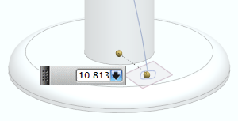
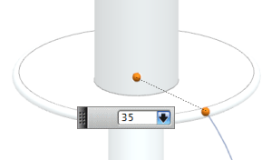

You want the helix to begin at the center of the rounded cornered square, which is 10.813 mm. from the center of rotation.

And have it end with a larger radius that intersects the top lip.

In the Helix dialog box, set the options as shown.
In the Size group:
Click the Radius option.
Law Type = Linear
Start Value = 10.813
End Value = 35
In the Pitch group:
Law Type = Constant
Value = 325
In this example, you want one constant turn that extends the length of the vertical tube, which is 325 mm. tall.
In the Length group:
Method = Limits
Start Limit = -2.5
The center of the rounded square sketch is 2.5 mm. below the specified CSYS.
End Limit = 325
In the Settings group, from the Turn Direction list, choose Left Hand.

Click OK.